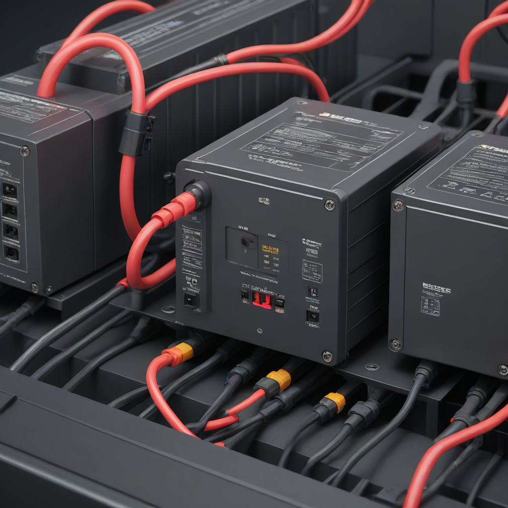
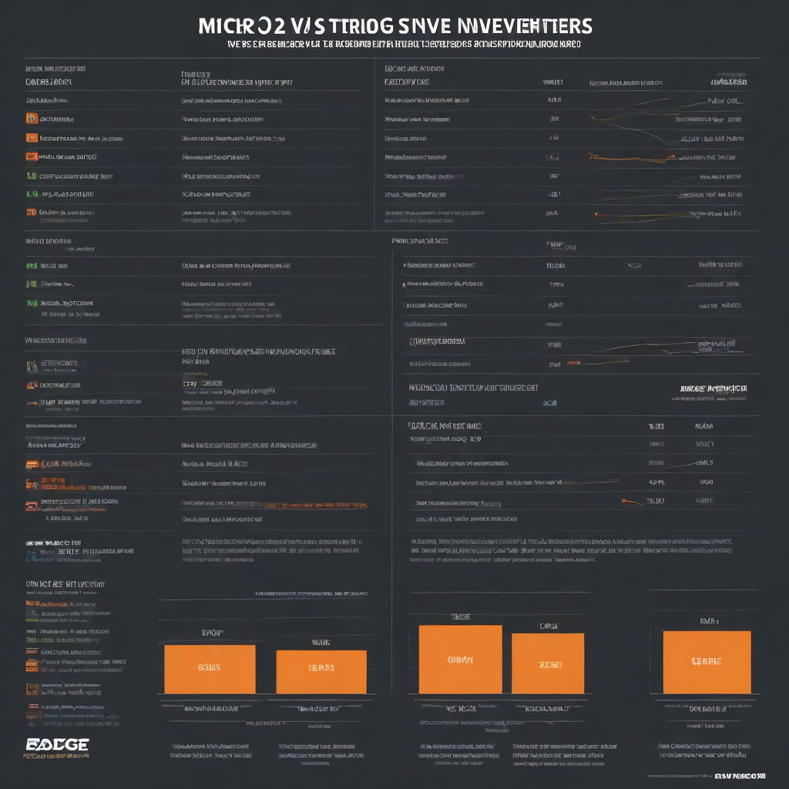

If you’re planning a solar project, the inverter choice is one of the most consequential decisions you’ll make—not just for upfront cost, but for how much your system actually produces over its 25+ year lifespan. Inverters are the “brain” of your solar setup: they convert DC power from your panels into usable AC electricity for your home. But not all inverters are created equal. Two dominant architectures dominate the U.S. residential market: microinverters (one per panel) and string inverters (one per array). Get it wrong, and you could lose 10–25% of potential energy—especially on complex rooftops. Get it right, and you’ll see better reliability, more savings, and smoother integration with batteries and smart home tech.
This 2026 deep-dive cuts through the marketing hype with real-world data, installation cost breakdowns, and performance benchmarks from NREL and EnergySage. We’ll compare reliability, payback periods, and even future-proofing for battery storage—so you can choose the inverter that delivers maximum value *for your specific roof and goals*.
Ready to optimize your investment? Let’s break it down—starting with the core differences that drive your decision.
What Are Micro vs String Inverters—and Why It Matters

The Core Difference
At its simplest:
- String inverters connect 8–24 panels in a series “string.” All panels in a string feed into a single inverter (usually mounted on a wall or garage).
- Microinverters attach *directly to each panel*, converting DC to AC at the source. Panels operate independently.
Why the Architecture Matters More Than Ever in 2026
The choice affects far more than just conversion efficiency:
- Energy yield: Shading (from chimneys, trees, or even seasonal sun angles) can cripple a string system—but microinverters keep each panel contributing.
- Safety: Microinverters reduce DC voltage to safe AC levels at the roofline, cutting fire risk (per NEC 2020 rapid shutdown rules).
- Expansion & storage: Adding panels or a battery later? Microinverters integrate more seamlessly—and with fewer compatibility headaches.
Key Decision Factors
Ask yourself these before locking in:
- Is your roof complex (multiple angles, dormers, shading)? → Microinverters win.
- Do you plan to add battery backup (like Tesla Powerwall or Enphase IQ Battery)? → Microinverters simplify integration.
- Do you want panel-level monitoring & fault detection? → Microinverters provide granular insights.

i>Is your budget tight *and* your roof is large/unshaded? → String inverters give the best $/watt.Side-by-Side Comparison
2026 Feature Comparison Table
| Feature | Microinverters | String Inverters |
|---|---|---|
| Avg. Cost (per inverter) | $45–$75 | $1,200–$2,500 |
| Panel-level monitoring | Yes (per-panel data) | No (string-level only) |
| Shading tolerance | High (panel-independent) | Low (one shaded panel drags down string) |
| Max efficiency (typical) | 96.5–97.5% | 97–98% |
| Lifespan (warranty) | 25 years | 10–12 years (often needs replacement) |
| Battery compatibility | Native (Enphase, SolarEdge hybrid models) | Requires DC-coupled system (more wiring, cost) |
| Failure impact | One panel down = 1.5–3% total loss | One bad string = 25–50% loss |
Cost Differences in 2026
Let’s compare a typical 8 kW residential system:
- Microinverters (e.g., Enphase IQ8+): ~$4,000–$5,200 total (including installation labor)
- String inverters (e.g., SolarEdge SE10k or Huawei SUN2000): ~$1,800–$2,800 total
That’s a $2,200–$3,400 premium for microinverters upfront. But remember: string inverters often need replacement after 10–12 years, while microinverters last the life of the panels. Factor in that future cost, and the gap shrinks significantly.
Performance Comparison
Data from NREL’s 2026 Residential Inverter Performance Report shows:
- Unshaded roofs: String inverters edge out by 1–2% in raw efficiency.
- Partially shaded roofs: Microinverters generate 15–25% more annual energy—especially in morning/evening sun or complex rooflines.
- Temperature tolerance: Microinverters run cooler under high heat (critical in Southwest states like AZ or NV).
- Long-term degradation: Microinverters show 0.2%/year failure rate vs. 0.8%/year for string inverters (per EnergySage 2026 installer survey).
Cost Breakdown: Upfront, Payback & ROI
Initial Investment (2026 Avg., 8 kW System)
Before incentives:
- Microinverter system: $20,000–$26,000 (including panels at $2.80/watt, $4,500 inverter cost, installation)
- String inverter system: $17,000–$21,000 (panels at $2.70/watt, $2,200 inverter, installation)
After applying the 30% federal ITC tax credit:
- Microinverter → $14,000–$18,200 net
- String → $11,900–$14,700 net
Payback Period & ROI
Assuming 1,100 kWh annual production (U.S. avg.), $0.15/kWh electricity rate, and 0.5% annual rate increase:
- String inverter: - Annual savings: ~$1,650 - Payback: 7.2–9.0 years - 25-yr ROI: ~12.5%
- Microinverter: - Annual savings: ~$1,850 (due to +12% energy harvest on typical roofs) - Payback: 7.6–9.6 years - 25-yr ROI: ~14.2%
Why microinverters win on ROI despite higher upfront cost: more energy = more bill savings + longer lifespan = no inverter replacement cost after Year 10.
Pros and Cons
Microinverters
Strengths
- Maximizes yield on shaded, multi-angle, or small rooftops
- Panel-level monitoring and rapid diagnostics
- Safer: no high-voltage DC wiring on roof
- 25-year warranty (matches panels)
- Future-proof: effortless integration with Enphase or Tesla batteries
Weaknesses
- Higher initial cost (~$2,200+ more)
- More components (one per panel = more potential failure points *per unit*, though system reliability is higher)
- Slightly larger physical footprint on the roof
Best Use Cases
- Homes with partial shading (trees, vents, adjacent buildings)
- Complex roof layouts (multiple ridges, skylights, dormers)
- Plans to add battery storage (e.g., Tesla Powerwall or Enphase IQ Battery)
- Long-term ownership (10+ years)
String Inverters
Strengths
- Lower upfront cost—ideal for tight budgets
- High efficiency on large, unshaded, south-facing roofs
- Proven reliability (30+ years in commercial use)
- Single point of maintenance (inverter in garage/basement)
Weaknesses
- Shading on *one panel* reduces entire string’s output
- Shorter warranty (10–12 years) → likely replacement needed
- Harder to expand later (new panels must match existing string specs)
- Battery integration adds cost/complexity (DC-coupled required)
Best Use Cases
- Large, unshaded, single-orientation roofs (e.g., farm buildings, newer homes)
- Short-term ownership (planning to sell in <5 years)
- Maximum upfront savings needed (e.g., DIY install with simplified wiring)
Frequently Asked Questions
Which is better for homes in 2026?
Microinverters are better for 70%+ of U.S. homes. Why? Most rooftops have *some* shading or complexity (vents, chimneys, dormers). Even minor shading drags down string systems—microinverters eliminate that risk. Plus, with the rise of home battery storage (Enphase IQ Battery costs $4,000–$8,000 in 2026), microinverters offer the smoothest path to backup power. EnergySage data confirms microinverters now dominate new residential installs.
What’s the real cost difference in 2026?
For an 8 kW system, expect to pay $2,200–$3,400 more for microinverters upfront. But spread over 25 years—and factoring in avoided replacement costs and extra energy harvest—the *true* incremental cost is closer to $50–$80/year. That’s less than $5/month for better performance, safety, and peace of mind.
Is installation harder for microinverters?
No—it’s simpler and faster. String inverters require careful string sizing, DC disconnects, and long runs of high-voltage DC wire (NEC-compliant conduit, labeling, etc.). Microinverters use standard AC wiring (like a lamp), reducing labor time and safety risks. Most certified installers report 15–20% faster microinverter installations on complex roofs.
Do microinverters work during grid outages?
No—unless paired with a battery. Like all grid-tied systems, they shut down during blackouts for safety (per UL 1741). But pair them with an Enphase IQ Battery and you get seamless backup power. String systems require a separate hybrid inverter or costly DC-coupled add-on ($3,000+ extra) for the same functionality.
What about warranty coverage?
Microinverters: 25 years (Enphase, AP Systems). String inverters: 10–12 years (SolarEdge, Huawei). If your inverter fails in Year 11, you’ll pay $1,500–$3,000 to replace it—plus labor. With microinverters, that risk is gone.
Can I mix panel types with microinverters?
Yes—flexibility is a major advantage. String inverters demand identical panels in a string (same wattage, voltage, age). Microinverters let you mix brands, ages, or even add future panels without recalculating string specs. Great for phased installations or replacing a damaged panel later.
Conclusion
Here’s the bottom line for your 2026 solar project:
- Best for most people: Microinverters Why: They maximize energy harvest on typical U.S. rooftops, offer 25-year peace of mind, and integrate perfectly with modern battery systems. If your roof isn’t a perfect, unshaded rectangle—microinverters pay off fast. Top pick: Enphase IQ8+ (with Enphase IQ Battery for full home backup).
- Budget pick: String Inverters Why: If your roof is large, south-facing, and completely unshaded—and you plan to move in <5 years—you’ll save $2,000+ upfront. Top pick: SolarEdge SE10k (with hybrid model if you *might* add battery later).
- Premium pick: Hybrid microinverters Why: If battery backup is non-negotiable (e.g., health needs, frequent outages), Enphase’s IQ8-Hybrid eliminates DC-coupling complexity and delivers whole-home backup at $11,500–$15,500 with a Powerwall or IQ Battery.
Next step: Use our Solar System Designer Tool to model your roof’s shading profile and get a real-time cost/performance estimate for both inverter types. Then talk to your installer—ask: “How would my system perform in December under these conditions?”